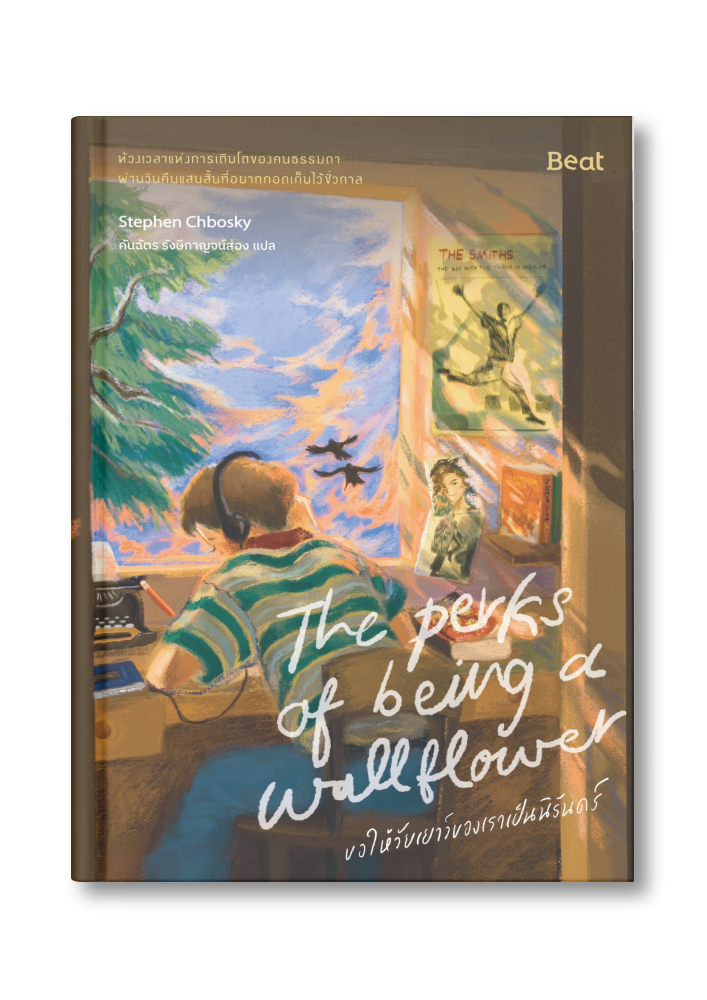
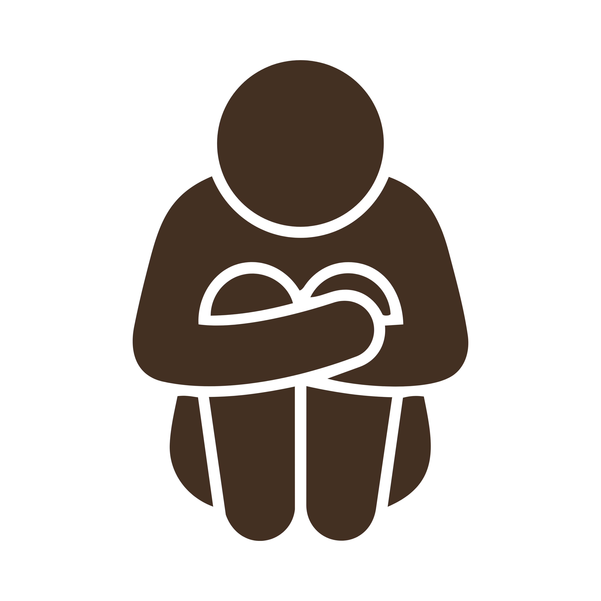
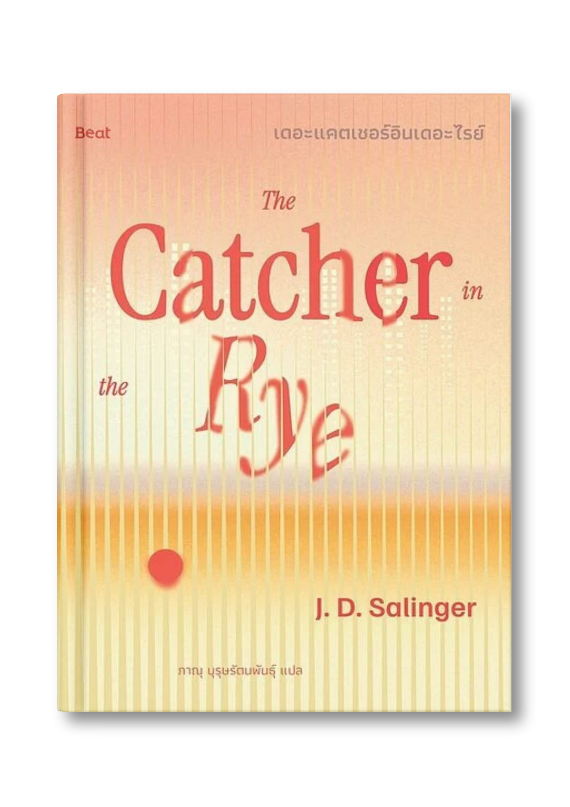
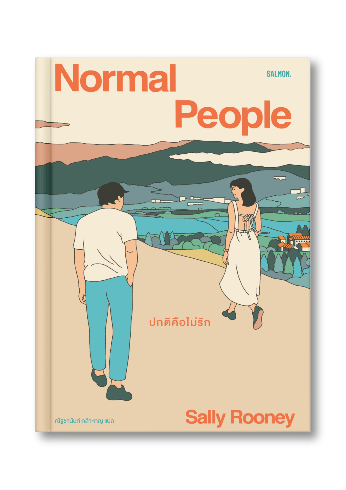
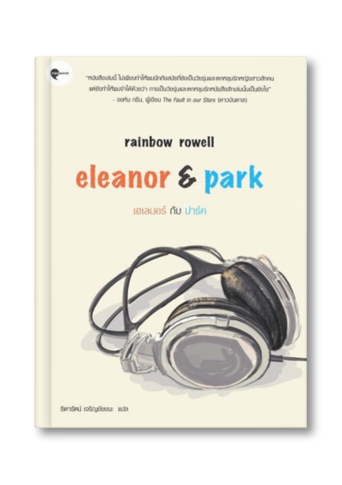

“ We accept the love we think we deserve ”
Stephen Chbosky
ขอให้วัยเยาว์ของเราเป็นนิรันดร์
ผู้เขียน: Stephen Chbosky
ผู้แปล: คันฉัตร รังษี กาญจน์ส่อง
เรื่องราวของ ‘ชาร์ลี’ เด็กหนุ่มผู้สังเกตการณ์โลกจากมุมเงียบๆ ที่จะพาคุณผ่านช่วงเวลาอันแสนเปราะบาง สับสน แต่ละมุนละไมของวัยเยาว์ วัยรุ่นทุกคนไม่ได้ต้องการเติบโตอย่างสมบูรณ์แบบ... พวกเขาแค่ต้องการใครสักคนที่เข้าใจ และเพลงสักเพลงที่ทำให้รู้สึกว่า “พวกเราเป็นนิรันดร์”

ภาษาของเรื่องมีความเรียบง่ายทว่าซึมลึก สะท้อนความคิดและความรู้สึกอันสับสนของเด็กหนุ่มได้อย่างสมจริง งานแปลถ่ายทอดอารมณ์ความละมุนและบรรยากาศแห่งความโหยหาได้อย่างละเมียดละไม
เรื่องราว Coming-of-Age ที่ติดตามชีวิตมัธยมปลาย ระหว่างช่วงเวลาแห่งความสุขสุดเหวี่ยงของวัยรุ่น เข้ากับความจริงอันมืดมนอย่างปัญหาการถูกฉวยโอกาส สุขภาพจิต และปมในอดีต
ฉากหลังในช่วงต้นยุค 1990s ที่อบอวลไปด้วยบรรยากาศวินเทจอันเป็นเอกลักษณ์ โดดเด่นด้วยเพลงร็อก Alternative ขับเน้นให้เห็นภาพช่วงเวลาวัยเยาว์อันแสนสั้นแต่ตราตรึงใจ
ฮีลใจให้เรากอดเก็บความเป็นตัวเอง ได้เรียนรู้ว่าการเป็นคนเงียบๆ หรือชอบสังเกตการณ์ ไม่ใช่เรื่องผิด แต่คือเสน่ห์ที่ไม่จำเป็นต้องฝืนเป็นคนอื่นเพื่อใคร
สะท้อนภาพความสัมพันธ์วัยรุ่นแบบจริงใจ ให้เราเห็นคุณค่าของการมีคนรับฟัง และตกผลึกความหมายของสัจธรรมที่ว่า "เรารับความรักในแบบที่เราคิดว่าเราคู่ควร"
เรียนรู้ไปพร้อมกับชาร์ลีว่าบาดแผลในอดีตไม่ได้นิยามอนาคตของเรา หนังสือจะเติมพลังใจให้เรากล้าเยียวยาตัวเอง และเติบโตอย่างเข้มแข็งขึ้น
มีการเล่าถึงบาดแผลจิตใจในวัยเด็กและการถูกฉวยโอกาสทางเพศ ซึ่งส่งผลกระทบต่อเนื่องถึงตอนโต

ถ่ายทอดสภาวะซึมเศร้า การแตกสลายทางจิตใจ การพยายามทำร้ายตัวเอง และการสูญเสีย
พูดถึงการดื่มแอลกอฮอล์ การสูบบุหรี่ และการทดลองใช้สารเสพติดของกลุ่มตัวละครวัยรุ่น
มีการกล่าวถึงความรุนแรงในครอบครัว การทำร้ายร่างกาย และการบูลลี่หรือการเหยียด กลุ่มคนหลากหลายทางเพศ


